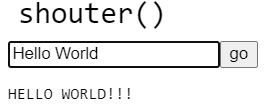

We have dealt with Strings as a piece of data representing text, but they're a lot more powerful than we've seen. They are a type of data known as an Object, which is a way of giving data some more power.
A defining f eature of objects is that they can have 'personal' functions that we trigger using dot notation. A simple example is the toLowerCase() function. Consider the following:
let crazyCase = "aBcDeFgHiJkLmNoPqRsTuVwXyZ";
let lower = crazyCase.toLowerCase(); //Assigns "abcdefghijklmnopqrstuvwxyz" to lower
This code assigns a silly String value to the crazyCase variable, then asks it to perform an action.
When we say crazyCase.toLowerCase(), we are asking the String to produces a brand new String that is based on itself. In this case, the toLowerCase() method returns an all lowercase copy of crazyCase, this result gets assigned to the lower variable.
Make sure that you understand that crazyCase will not change its own value when we call the toLowerCase() function. All String functions produce new Strings that are simply based on the one being asked.But we don't have to use so many variables. If we want to effectively lowercase the crazyCase variable, we can just assign the result over the old one.
crazyCase = crazyCase.toLowerCase();
Technically the String itself doesn't change. The variable is replaced with an 'updated' version of itself and the old one is discarded.
Open the Shouter Example in CodeHS
There you will find a non-visual p5 program that will be similar to most of this assignment's sections. The setup function makes a small text field for you to type input into, and there is a new function named shouter(), which has been linked to it.
Like we've seen before, the shouter() function accepts a parameter and returns its result. The setup() function does the work to make sure that the values display on the screen.
The purpose of the shouter() function is silly. It returns the uppercase version of the parameter, followed by three exclamation points.
function shouter(inputStr){
let shoutMessage = inputStr.toUpperCase() + "!!!";
return shoutMessage;
}
Since our goal is to have an uppercase version of the parameter String, we need to ask the parameter to upper-case itself by calling the toUpperCase() function. We also use the plus sign '+' to concatenate on the String "!!!"
Since the shouter() function is already made, you can run the program and test it out.
Type a value in the box and hit enter to trigger it.

The result displays the 'shouting' version of the input.
Strings are made up of many characters, all organized with an index.
Sacco
01234
The charAt() function is our way of getting a single character out of the String. All we need to do is provide the index. Consider the following code:
let str = "Sacco";
let firstChar = str.charAt( 0 ); // 'S'
let secondChar = str.charAt( 1 ); // 'a'
Notice that each call to charAt has a different index as a parameter. This changes which of the characters is returned.
Open the Reverser workspace in CodeHS, where you are again meant to fill out a single function.
The reverser() functions purpose is to take the input String and output it, but characters reversed. You may assume that the String is exactly four characters.
deer -> reed
arts -> stra
sacco -> occas
Test your reverser() function by typing different four-letter words into the input field and hitting the Reverser button. If done properly, the output should reverse it.
After your reverser function works properly, test out different input to determine the following:
Dealing with values at the front of the String is easy because the front is always at index 0.
Open the Last Letter workspace in CodeHS:
The lastLetter function's purpose is to return the very last letter of the input String.
It comes pre-filled with a flawed version
function lastLetter(inputStr){
let last = inStr.charAt(4); //The last letter in 'Sacco' is index 4
return last;
}
You can see this working by putting in a String like "Sacco" or "Crane" and seeing the last letter output.
The flaw is revealed when you put in Strings of a different length. Since the index 4 is assumed to be the last index of the String, it will not be prepared for Strings like "computer", where index 4 is the u in the middle of the String.
To fix this flaw, we need to think more about why 4 was chosen for Sacco and Crane, which both have 5 letters. With the way that the index numbering system works, starting at zero causes the very last index to always be one less than the length.
Sacco
01234
The word "computer" having a length of 8 means that the last valid index is 7
computer
01234567
If you are not certain of how long a String is, you are allowed to ask it. Strings have a .length attribute that holds a number representing how long it is. If we have a String from the user and we don't know how long it is, we can access its .length value to see how long it is.
inputStr.length //holds the length of the String assigned to inStr
One benefit of being able to know the length of a String is being able to determine where the last index is. Since our indexing starts at 0, the last index in a String is one less than that String's length. Like when we needed to substring the last letter out of Sacco, which has a length of 5, but the last index is number 4.
In the lastLetter() function after getting the input String, you can use this line to determine the last valid index.
let lastIndex = inputStr.length - 1; //The last index is one less than the length
Now lastIndex will be 4 only if the length of the String is 5, but if the String had a longer length, like "computer"'s length of 8, it would calculate index 7 instead. The last thing to do is to update the substring to use the lastIndex variable instead of the hardcoded 4.
Make these changes to the lastLetter() function and run your program to test it out with Strings of different length, like "computer" and "sacco", confirming that they correctly produce the last letters.
Re-Open the Reverser workspace that you previously completed.
Previously we noticed that using words of different lengths acted funny. We don't want our reverser function to fail, so we are going to modify it to have two different return statements. If the length of the parameter String is exactly 4, return the reversed value as you have been doing. Any String of a different length should simply return "INVALID INPUT" instead.
Accomplishing this will require adding an if statement that focuses on inputStr.length
Test your program with Strings that are too long, too short, and just right to confirm that it only works with the proper input.
Each character in a String is labeled with its own index starting with 0
The substring() function will create and return a new String, made up of characters in a specific range using these indices. For example, if I wanted the first four characters of a String it might look like this:
let str = "computer"; let a = str.substring(0,4); //"comp" let b = str.substring(1,3); //"om" let c = str.substring(3,5); //"pu"
Notice how the parameters indicate a starting index of 1 and a stopping index of 4. This will produce a String "omp" that is defined by that area.
In the example above, the parameters of the substring() function call were 0 and 4, but the String was made up of the characters at indices 0,1, 2, and 3. One confusing aspect of the substring's boundaries is that the ending boundary is exclusive. This can be confusing at times, but you get the hang of it.
You must provide a starting index, but if you do not provide an ending index, the substring will continue to the end of the String.
let str = "Sacco"; let a = str.substring( 1,3); //"ac" let b = str.substring( 1 ); //"acco"
Open the Sentence Maker workspace in CodeHS. The sentenceMaker() function's purpose is to take the input String, which may have questionable capitalization, and return it in 'Sentence Format', which we are defining as a single capital followed by all lowercase letters.
"hElLo HoW Are YoU?" -> "Hello how are you?"
"misTER SACco" -> "Mister sacco"
Like before, we will use the inputStr to create a result before returning it.
We can uppercase and lowercase Strings by calling the toUpperCase() and toLowerCase() functions, but they change the entire String to either upper or lower. The challenge here is to separate the String into its separate parts. If you have the input's value in a variable named str, you can break it up correctly with two substrings.
let firstLetter = inputStr.substring(0,1); //The very first letter let afterFirst = inputStr.substring( 1 ); //Everything after the first letter
We now have two Strings that together make up the message, but they may not have the right capitalization. Use each String's toUpperCase() or toLowerCase() function to make sure that they have the proper case before concatenating them back together and outputting them.
Test your program multiple times to make sure that it both capitalizes the beginning of the String and lowercases the rest.
Open the Half and Half workspace in CodeHS
The halfAndHalf() function is meant to take the input String return it in a two-line, with half of the String on the top and half on the bottom.
computer -> comp
uter
science -> sci
ence
Your output is an html <p> tag. This means that we can add break tags to our String and it will represent moving to a new line.
If you make the function return "MISTER<br>SACCO", the break will not appear, instead you will see them separated:
MISTER
SACCO
Even length'd words split up easily, but there will be issues when the length of the word is odd. It is okay to have an uneven amount of characters on each line, but you must avoid using decimals as an index. Halving the length is an important part of finding where to divide your String, but if the length of the word is 7, you don't want to use 3.5 as an index.
Instead use integer division, meaning that half of seven is 3 flat, with no decimal. You can accomplish this by using the floor() function after dividing. This will provide you with an integer that is close enough to the halfway mark in your String.
Test your halfAndHalf() function with multiple Strings of different lengths. Also check to make sure that words with an odd length work as well.
Open the Middle workspace.
The purpose of the middle() function found there is to return the 'middle' of the input String, where the first and last characters are removed.
"football" -> "ootbal"
"soccer" -> "occe"
"table tennis" -> "able tenni"
Mr. Sacco is trying to bait you into thinking that you will be able to subtract from the String somehow but "football" - "f" - "l" is not real code. In reality, all you need is a single substring whose start and end are chosen to avoid choosing the first and last letters. Meaning your substring should start later than the first letter, and end earlier than the last letter.
Test our the middle() function with Strings of different lengths to confirm that it functions properly.
Speaking in Pig Latin involves flipping the first syllable of a word to the end, while also adding 'ay'. The lazy way to do this is to simply take the first letter and move it to the back.
Pig -> igpay
Sacco -> accosay
Computer -> omputercay
This is 'lazy' because it doesn't work for more complex words:
"Thursday" -> "Hursdaytay" instead of the proper "Ursdaythay"
We will accept this flaw for now.
Implement the lazyPigLatin() function so that it converts the input String to a lazy pig latin version of itself. Try it a few times with words of different lengths.
When using modern browsers, you are rarely required to input the www. that precedes most websites. This is because when you leave it out, it is automatically added. The wwwAdder() function's purpose is to take the input and maybe add a "www." in front.
The addition of "www." should only occur if necessary. A String that already starts with "www." needs no change
"google.com" -> "www.gooogle.com"
"bing.com" -> "www.bing.com"
"www.altavista.com" -> "www.altavista.com"
To do this, you will have to look at the first four characters. Use a substring to get them into their own variable and then an if statement to see if it's "www.". From there you can determine if you should add the "www." to the front or not.
Try your www Adder function on strings that have a www in front and also with those that do not to make sure that it works properly.
Open the Star Wars Name workspace.
In order to determine your Star Wars name, you need four piece of information: your first name, last name, mother's maiden name, and your birth city. The workspace already has four inputs created.
Your Star Wars Name is made up of:
The first three letters of your first name, but reversed
The first two letters of your last name
The first two letters of your Mother's Maiden name
The first three letters of your birth city
For Mr. Ian Sacco, born in Santa Cruz to a mother who used to be named Fergusson
Naisa Sanfe
The starWarsName() function has a parameter for each of these
function starWarsName(first, last, maidenName, city){
}
Make sure that your final name has proper capitalization, despite what the user enters.
Test your programs with Mr. Sacco's information above, and then your own information to confirm that your Star Wars Name Generator functions properly.